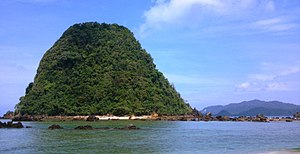

Pulau Merah
Pulau Merah atau Pulo Merah ( Red Island dalam Bahasa Inggris) adalah objek wisata pantai yang terletak di Kecamatan Pesanggaran, Kabupaten Banyuwangi, Provinsi Jawa Timur. Di pantai ini terdapat sebuah bukit hijau kecil dengan tanah berwarna merah yang terletak di dekat bibir pantai. Bukit tersebut dapat dikunjungi dengan berjalan kaki saat air laut surut. Di Pulau Merah terdapat Pura yang digunakan pemeluk agama Hindu melaksanakan ibadah ataupun upacara Mekiyis. Kawasan wisata ini dikelola oleh Perum Perhutani Unit II Jawa Timur, KPH Banyuwangi Selatan.Pada tahun 1990-an, kawasan Pulau Merah pernah rusak parah akibat diterjang bencana tsunami.[2] Pemerintah Kabupaten Banyuwangi di bawah kepemimpinan Bupati Abdullah Azwar Anas memberikan perhatian penuh terhadap pengembangan kawasan wisata ini, salah satunya dengan memperbaiki akses jalan menuju lokasi. Pada akhir 2012 lalu, Pemkab Banyuwangi telah memperkenalkan Pantai Pulau Merah [pranala nonaktif permanen] ke dunia internasional melalui penyelenggaraan ajang lomba balap sepeda "Banyuwangi Tour de Ijen". Sebelum adanya "Tour de Ijen", akses jalan menuju Pantai Pulau Merah lumayan berat, berupa jalan berbatu yang melintasi area kebun dan juga sawah milik warga.
De Djawatan

De Djawatan adalah hutan wisata yang berlokasi di Benculuk, Cluring, Kabupaten Banyuwangi. Pepohonan di De Djawatan adalah trembesi yang dipenuhi dengan tumbuhan epifit. Pengunjung sering kali berfoto dengan latar pemandangan pepohonan ini. Pada 2017, tempat ini sempat viral di media sosial dan dikunjungi oleh banyak orang, tetapi saat itu tempat ini masihlah tempat penimbunan kayu Perhutani. Setelah menimbang potensi wisata dari tempat tersebut, Dinas Pariwisata Kabupaten Banyuwangi bersama Perhutani Kesatuan Pemangkuan Hutan (KPH) Banyuwangi selaku pemilik lahan resmi membuka De Djawatan sebagai tempat wisata pada Juni 2018.
G-Land
Pantai Plengkung, atau lebih dikenal dengan nama G-Land, adalah pantai yang terletak dalam kawasan Taman Nasional Alas Purwo, Kabupaten Banyuwangi, Jawa Timur. Plengkung dapat dicapai selama setengah hari perjalanan darat dari Bali. Pantai Plengkung juga bisa dicapai dengan boat sewaan dari Bali.